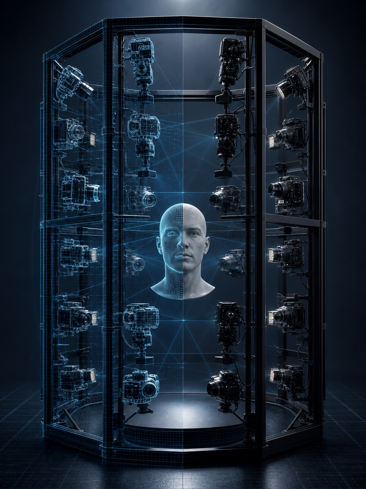

Case Study · Digital Twin Research
Digital Twin Pipeline for 3D Human Digitizing
A research pipeline for optimizing 3D human digitizing systems through digital twin methodology, validation, and production-aware system design.

Overview
Research Problem
3D human digitizing requires careful coordination between acquisition conditions, reconstruction quality, camera placement, lighting, and repeatable analysis. The research asks how a digital twin can make that process more systematic before modifying the physical capture system.
Pipeline Direction
The pipeline first searches and evaluates system variables in virtual space, then transfers optimized conditions into the physical facial digitizing system for real-world capture and reconstruction.
Pipeline Architecture
Virtual Space
Optimize Before Physical Capture
Search camera, lighting, and placement variables using a simulated facial digitizing system.
Ground-truth head model, virtual cameras, lighting, and capture conditions.
Loss values feed back into the virtual system variable search.
Reconstructed geometry and appearance are compared against the known virtual reference.
Measures geometric distance between reconstructed and reference surfaces.
Measures appearance consistency between rendered output and reference texture.
Physical Space
Apply to the Real Digitizing Rig
Transfer optimized variables into the physical setup and run the real capture pipeline.
Human face, camera rig, lighting setup, and calibrated acquisition conditions.
Process
Model the Capture System
Define the physical components and controllable variables of the 3D human digitizing environment.
Optimize in Virtual Space
Use Chamfer Loss and Texture Loss to test camera and lighting placements against ground-truth reconstruction quality.
Transfer to Physical Space
Apply optimized system variables to the real capture rig and evaluate the resulting digitized human face.
Outcome
Publication
Published as Digital Twin Pipeline for Optimizing 3D Human Digitizing System, Springer Lecture Notes in Networks and Systems, vol. 1153, CIPR 2024.
Research Continuity
The work anchors later interests in digital twins, 3D human digitizing, immersive content production, and real-time media systems.